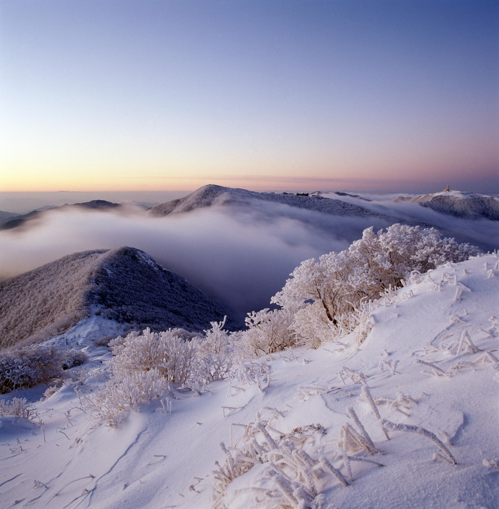

SANKIT산킷
KIT 074 · 02/05
토요일 11.28 · 23곳 중 눈·비 60%는 6곳
토요일은
남쪽 산에 눈
덕유산눈·비 60% · 최대 0.8cm · 낮 -1℃
한라산눈·비 60% · 최대 1.0cm · 낮 0℃
지리산눈·비 60% · 0.5cm 미만 · 낮 2℃
소백산 · 지산비 60%
설악산아침 -5℃ · 낮에도 -2℃
나머지 17곳은 강수확률 30% 이하입니다. 토요일 아침 영하는 10곳,
낮에도 영하인 곳은 설악산·덕유산 두 산(무주 포함 3곳)뿐입니다.
SANKIT산킷
KIT 074 · 04/05
산킷이 고른 세 곳 · 이번엔 일요일
맑은 날을 고르면
일요일입니다
강원 · 일요일태백산 강수 0% · -10℃ / 0℃ · 맑음
충청·경북 · 일요일소백산 · 속리산 둘 다 강수 0% · 소백 -10℃ / 속리 -5℃
스키장 · 일요일 강수 0%용평 · 하이원 · 알펜시아 · 오투
덕유산은 토요일 눈이 온 뒤 일요일 아침 -9℃입니다. 길이 얼 수 있으니
아이젠을 챙깁니다. 산불조심기간 통제 탐방로는 출발 전 국립공원공단 공지로 확인합니다.

SANKIT산킷
토요일 아침,
출발 전에 한 번 더
산킷 한 줄 — 영하 10℃ 아침에는 장갑 두 켤레와 보온병이 장비보다 먼저입니다.
※ 정상부 산악예보가 수집되지 않아 기상청 단기예보(산 아래 격자, 11.27 02시 발표) 값입니다. 정상은 더 춥습니다.
저장해 두고 토요일 아침에 꺼내 보세요. 매주 금요일 밤 9시, 주말 정상 날씨를 올립니다 — 팔로우해 두세요.
PHOTO · 한국관광공사 차정남 · 분위기 사진